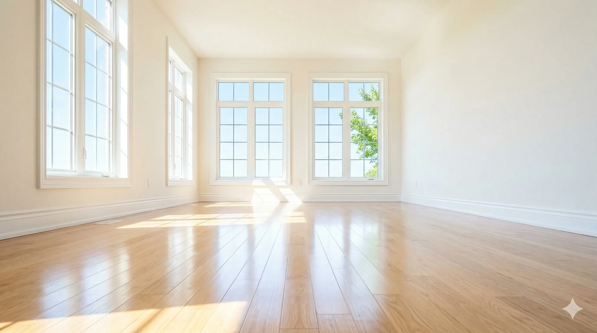

Moving is stressful enough without having to worry about scrubbing baseboards on your way out the door. Whether you are trying to secure your rental deposit or preparing a house for a new buyer, a thorough clean is essential.
The kitchen requires the most attention. You need to pull out the refrigerator and oven to clean behind them. Thoroughly degrease the stovetop, range hood, and scrub the inside of the oven and microwave.
It's the small things that property managers look for. Wipe down all the baseboards, clean the window tracks, sanitize the light switches, and dust the blinds.
Save your energy for the heavy lifting. Let us handle the dirt with our Move In/Out Cleaning Service.